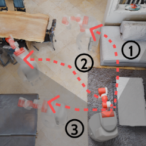
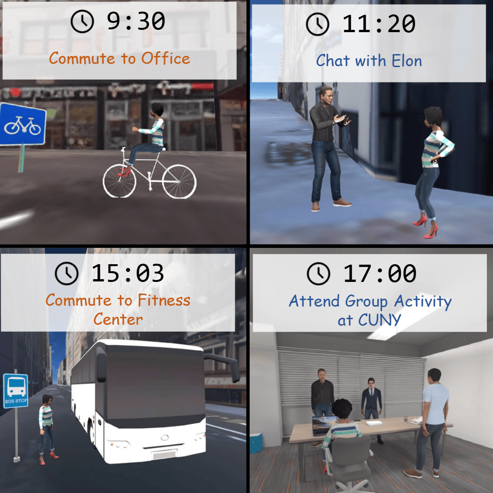
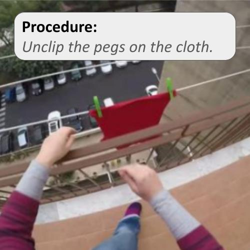
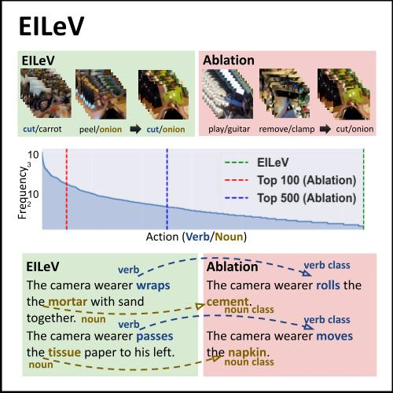

|
Zheyuan "Brian" Zhang I am a first-year Ph.D. student in Computer Science at the Johns Hopkins University, advised by Prof. Tianmin Shu and Prof. Daniel Khashabi. Before joining JHU, I graduated with an M.S. in Robotics from the Robotics Institute and a Graduate Certificate in Cognitive Science from the Weinberg Institute for Cognitive Science at the University of Michigan. I was a research assistant at the SLED lab, advised by Prof. Joyce Chai. I got my Bachelor's in Computer Science from College of Information & Computer Sciences, UMass Amherst.
zzhan378 [at] jhu [dot] edu / CV / Scholar / Twitter / Github / Blog |
{kind=link}
ResearchI consider myself as a connectionist, and I am fascinated with understanding natural intelligence through computational modeling with neural networks. My research interests center on Embodied AI, Multimodality, and Natural Language Processing, with the goal of creating Scalable Cognitive Agents that perceive, act, and learn continuously and sample-efficiently from experiences, similar to humans in both physical and virtual worlds. If you are a JHU student interested in these topics and want to work with me, please drop me an email for a chat. |
News
|
Publications and Preprints* → equal contribution |
|  |
MindJourney: Test-Time Scaling with World Models for Spatial Reasoning
Yuncong Yang*, Jiageng Liu*, Zheyuan Zhang, Siyuan Zhou, Reuben Tan, Jianwei Yang, Yilun Du, Chuang Gan Conference on Neural Information Processing Systems (NeurIPS), 2025 Project Page | Paper | Code |
|  |
Ella: Embodied Social Agents with Lifelong Memory
Hongxin Zhang*, Zheyuan Zhang*, Zeyuan Wang*, Zunzhe Zhang, Lixing Fang, Qinhong Zhou, Chuang Gan MAS Workshop @ ICML, 2025 Project Page | Paper | Code |
|
Virtual Community: An Open World for Humans, Robots, and Society
Qinhong Zhou*, Hongxin Zhang*, Xiangye Lin*, Zheyuan Zhang*, Yutian Chen, Wenjun Liu, Zunzhe Zhang, Sunli Chen, Lixing Fang, Qiushi Lyu, Xinyu Sun, Jincheng Yang, Zeyuan Wang, Bao Chi Dang, Zhehuan Chen, Daksha Ladia, Jiageng Liu, Chuang Gan Project Page | Paper | Code |
|
|
Do Vision-Language Models Represent Space and How? Evaluating Spatial Frame of Reference Under Ambiguities
Zheyuan Zhang*, Fengyuan Hu*, Jayjun Lee*, Freda Shi, Parisa Kordjamshidi, Joyce Chai, Ziqiao Ma International Conference on Learning Representations (ICLR), 2025 (Oral) Pluralistic Alignment @ NeurIPS 2024 Project Page | Paper | Code | Dataset |
|

|
COMBO: Compositional World Models for Embodied Multi-Agent Cooperation
Hongxin Zhang*, Zeyuan Wang*, Qiushi Lyu*, Zheyuan Zhang, Sunli Chen, Tianmin Shu, Behzad Dariush, Kwonjoon Lee, Yilun Du, Chuang Gan International Conference on Learning Representations (ICLR), 2025 Project Page | Paper | Code |
|  |
Explainable Procedural Mistake Detection
Shane Storks, Itamar Bar-Yossef, Yayuan Li, Zheyuan Zhang, Jason J. Corso, Joyce Chai Conference on Empirical Methods in Natural Language Processing (EMNLP), 2025 Knowledgeable Foundation Models Workshop @ ACL, 2025 Paper | Code |

|
A Combinatorial Approach to Neural Emergent Communication
Zheyuan Zhang International Conference on Computational Linguistics (COLING), 2025 Paper |
|  |
EILeV: Eliciting In-Context Learning in Vision-Language Models for Videos Through Curated Data Distributional Properties
Keunwoo Peter Yu, Zheyuan Zhang, Fengyuan Hu, Shane Storks, Joyce Chai Conference on Empirical Methods in Natural Language Processing (EMNLP), 2024 Video-Language Models Workshop @ NeurIPS 2024 Paper | Code |

|
From Heuristic to Analytic: Cognitively Motivated Strategies for Coherent Physical Commonsense Reasoning
Zheyuan Zhang*, Shane Storks*, Fengyuan Hu, Sungryull Sohn, Moontae Lee, Honglak Lee, Joyce Chai Conference on Empirical Methods in Natural Language Processing (EMNLP), 2023 Paper | Code |

|
Low-cost Solution for Vision-based Robotic Grasping
Zheyuan Zhang, Huiliang Shang International Conference on Networking Systems of AI (INSAI), IEEE Computer Society, 2021 (Second Prize) Paper | Code (110 ) |
Other Projects |
|
Bot Lab: Autonomous Ground Vehicle from Low-level Control, SLAM to Planning and Exploration
Zheyuan Zhang, Yu Zhu, Manu Aatitya Raajan Priyadharshini, Thirumalaesh Ashokkumar ROB 550 (Robotic Systems Laboratory), University of Michigan, 2022 Paper |
Teaching |

|
Graduate Student Instructor (GSI), EECS 492 (Introduction to Artificial Intelligence), University of Michigan
Winter 2024, Fall 2023 Textbook: Artificial Intelligence: A Modern Approach, 4th Edition |
Academic Services
|
My hobbies
|
|
Source code borrowed from Jon Barron's website. |